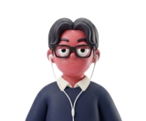
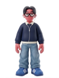

❤️❤️❤️
SCORE
0
S

G
0:00
🥤
0
🔊
← → Hold ／ Hold left-right of screen = Move ・ ↑ Swipe up = Jump ・ ↓ Swipe down = Slide ・ Shift／Double-tap = Dash
GAME OVER
RETRY
NAGOYA NINGEN
RUN
3D
Dash through the streets of Nagoya!
▶ START
Move: ← → ／ Hold left-right of screen ・ Jump: ↑ ／ Swipe up
Slide: ↓ ／ Swipe down ・ Dash: Shift ／ Double-tap
🥤 Grab coins, dodge, and run ／ A giant boss chases you every stage